名人中村茂讲疏星
首页
定式及研究
#1 名人中村茂讲疏星 作者：有志青年 发表时间：2009-2-17 12:36:30
【有志注：此内容来自杰出连珠网，全日文内容，望有兴趣者翻译成中文供国内五子棋爱好者学习，在此感谢】
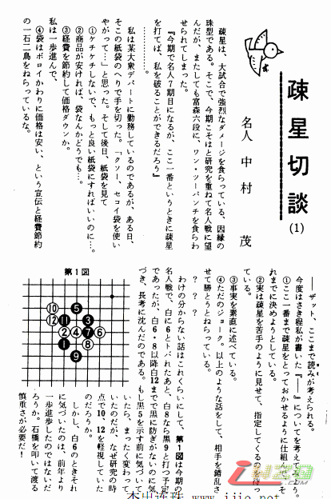
#2 Re:名人中村茂讲疏星 作者：有志青年 发表时间：2009-2-17 12:36:51
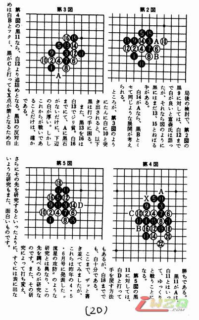 ［ o英同学于 2013-10-20 11:20:36 时花20金币送鲜花一朵］
［ o英同学于 2013-10-20 13:32:57 时花20金币送鲜花一朵］
#3 Re:名人中村茂讲疏星 作者：有志青年 发表时间：2009-2-17 12:37:14
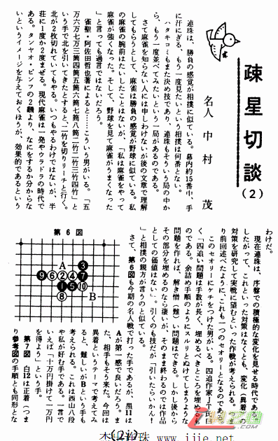
#4 Re:名人中村茂讲疏星 作者：有志青年 发表时间：2009-2-17 12:38:05
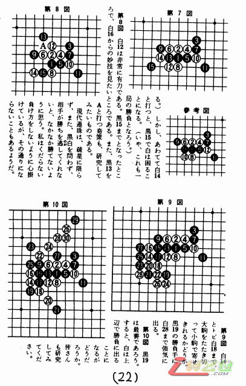
#5 Re:名人中村茂讲疏星 作者：有志青年 发表时间：2009-2-17 12:39:27
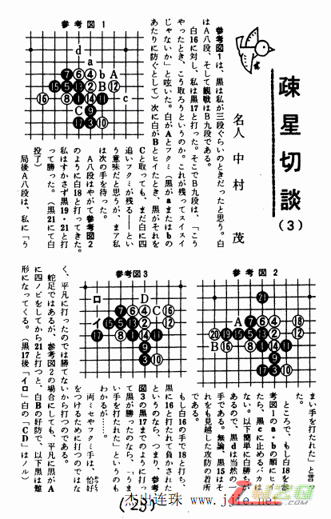
#6 Re:Re:名人中村茂讲疏星 作者：有志青年 发表时间：2009-2-17 12:39:48
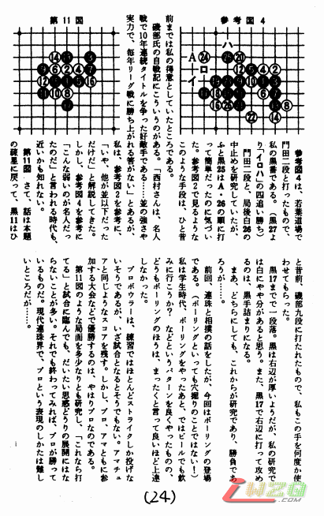
#7 Re:名人中村茂讲疏星 作者：有志青年 发表时间：2009-2-17 12:40:11
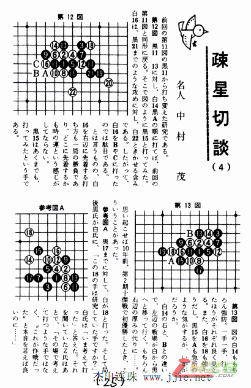
#8 Re:名人中村茂讲疏星 作者：有志青年 发表时间：2009-2-17 12:40:33
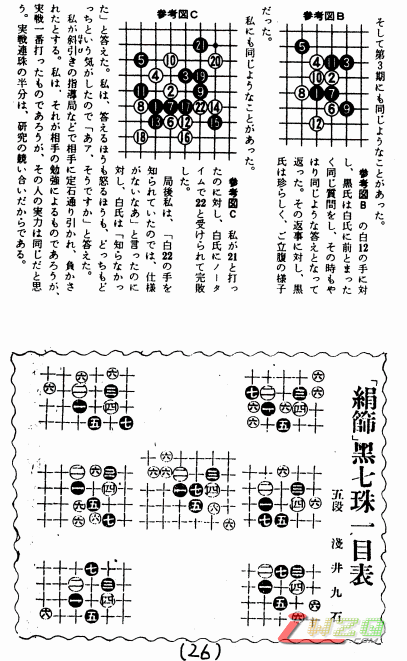
#9 Re:名人中村茂讲疏星 作者：有志青年 发表时间：2009-2-17 12:40:53
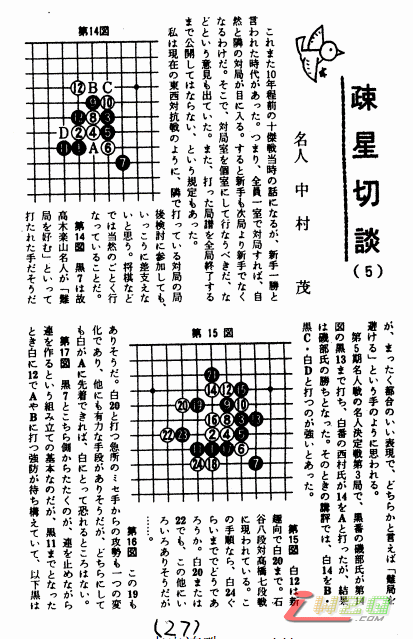
#10 Re:名人中村茂讲疏星 作者：有志青年 发表时间：2009-2-17 12:41:14
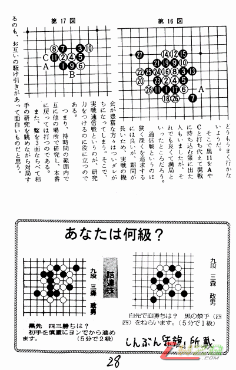
#11 Re:名人中村茂讲疏星 作者：有志青年 发表时间：2009-2-17 12:41:35
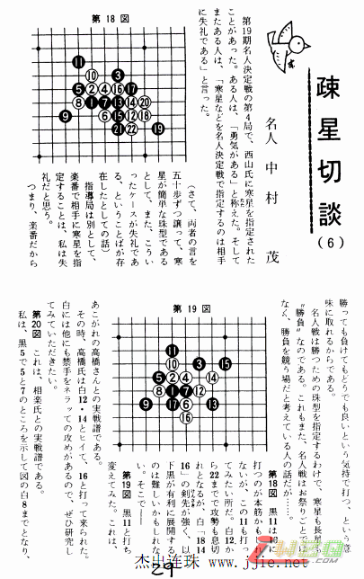
#12 Re:名人中村茂讲疏星 作者：有志青年 发表时间：2009-2-17 12:41:57
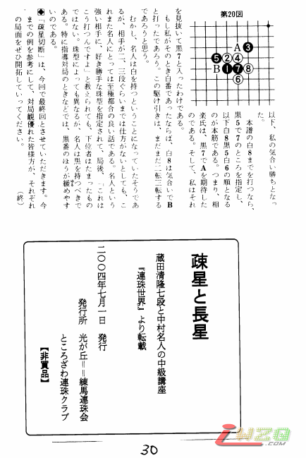
#13 Re:名人中村茂讲疏星 作者：越狱行辕 发表时间：2009-3-3 22:35:52
那个。。。。。能翻译下么
#14 Re:名人中村茂讲疏星 作者：极地剑客 发表时间：2009-3-8 22:51:43
我手上也很多连珠古书哈~感觉挺不错的说~都是好资料~
#15 Re:名人中村茂讲疏星 作者：浙江五子棋 发表时间：2009-7-25 10:35:14
实在是看不懂~［ 失落刀 于 2009-7-25 11:20:04 时奖励此帖[金币加 20 威望加1］0+1
#16 Re:名人中村茂讲疏星 作者：王志伟123 发表时间：2009-7-25 17:48:16
挺好，要有翻译就更好了！
#17 Re:名人中村茂讲疏星 作者：gerbo 发表时间：2009-7-25 19:12:30
可以做个包子么??很多文字跟数字看不清楚,也不好复制,要不可以用翻译软件看懂中村先生的意思了.
#18 Re:名人中村茂讲疏星 作者：超级天逸超人 发表时间：2009-8-14 12:49:06
同上 同上 确实看不懂
不过看例子 也能明白许多了
向中村先生学习
#19 Re:名人中村茂讲疏星 作者：龙之紫辰 发表时间：2009-12-6 2:30:02
 看不懂
看不懂
#20 Re:名人中村茂讲疏星 作者：龙之紫辰 发表时间：2009-12-6 2:30:46
 拜托谁来翻译下
拜托谁来翻译下
#21 Re:名人中村茂讲疏星 作者：茗弈宽容 发表时间：2009-12-6 11:59:08
看着感觉视力狠受不了........宽容"噗"一声晕倒在有志脚边
#22 Re:名人中村茂讲疏星 作者：李冉 发表时间：2009-12-11 10:50:58
太崩溃了，一个字儿不懂
#23 Re:名人中村茂讲疏星 作者：小小亦默 发表时间：2011-9-5 14:11:37
等我这个学期把日语学了 来给你们翻译
#24 Re:名人中村茂讲疏星 作者：一招惊心 发表时间：2011-9-6 11:38:26
大哥吾不懂日语呀！
#25 Re:名人中村茂讲疏星 作者：霸王龙 发表时间：2011-9-21 12:21:39
实在是看不懂~
#26 Re:名人中村茂讲疏星 作者：掌棋宣传员 发表时间：2011-9-21 18:51:43
为啥一定要翻译呢?现实意义又不是很大,现在中国五子棋这么强大,我们应该去日本的五子棋论坛发几个图片,什么<<曹冬讲松月--有木有,有木有>>,<<大鱼讲的瑞星啊--你伤不起>>....横线后面的网络语言就是为了难为他们的中文翻译的
认为我说的对的请鲜花~~
［ 雨过云舒 于 2011-9-21 22:22:19 时花20金币送鲜花一朵］
［ 梦婷 于 2011-9-23 9:26:44 时花20金币送鲜花一朵］
［ 尕孩 于 2012-6-11 22:14:31 时花20金币送鲜花一朵］
#27 Re:名人中村茂讲疏星 作者：百地三太夫 发表时间：2011-9-26 10:49:40
崩溃，看不懂几个字。
#28 Re:Re:名人中村茂讲疏星 作者：棋男子 发表时间：2011-10-14 12:05:38
强大！！
#29 Re:名人中村茂讲疏星 作者：继续沉醉 发表时间：2012-12-7 22:11:35
纳尼，我怎么看不懂？
#30 Re:名人中村茂讲疏星 作者：冰雪笑醉 发表时间：2012-12-19 14:45:50
 ，，又是挖坟的，看不懂，有没有翻译的
，，又是挖坟的，看不懂，有没有翻译的
到现在这么多年还没被翻译吗？
［此帖子已被 冰雪笑醉 在 2012-12-19 14:47:47 编辑过］
#31 Re:名人中村茂讲疏星 作者：雷大少 发表时间：2013-3-21 23:37:32

 656565
656565
#32 Re:名人中村茂讲疏星 作者：无知帝 发表时间：2013-9-6 18:51:24
挖坟就得专业一点